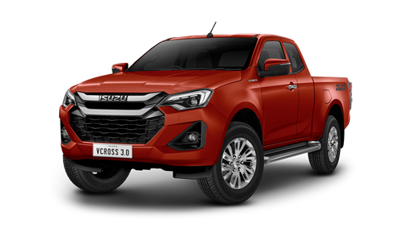

รถแนะนำ!!!!
|  |
suzu D-Max Hi-Lander 2023 (อีซูซุ ดีแมคซ์ ไฮ-แลนเดอร์ 2023) รถกระบะอเนกประสงค์แบบยกสูง สำหรับโดยสารและขนของหรืออุปกรณ์ และสามารถลุยน้ำท่วมหรือสภาพถนนที่ไม่ค่อยดีนักได้ แต่ไม่ถึงขั้นออฟโรด มี 2 ตัวถัง คือ 2 ประตู แค็บ 2 ที่นั่ง และ 4 ประตู 5 ที่นั่ง
|
 |
Isuzu MU-X (MY 2023) ดีเซล 4 สูบ DOHC 16 วาล์ว 1.9 ลิตร 1,898 ซีซี พ่วงระบบอัดอากาศ VGS และ Intercooler กำลังสูงสุด 150 แรงม้า ที่ 3,600 รอบ/นาที แรงบิดสูงสุด 350 นิวตันเมตร ที่ 1,800 – 2,600 รอบ/นาที จับคู่กับเกียร์ธรรมดา 6 จังหวะ / จับคู่กับเกียร์อัตโนมัติ 6 จังหวะ แบบ Sequential Shift พร้อม Manual Mode + – ขับเคลื่อน 2 ล้อ รองรับน้ำมันสูงสุดดีเซล B20
|
| |
|
|